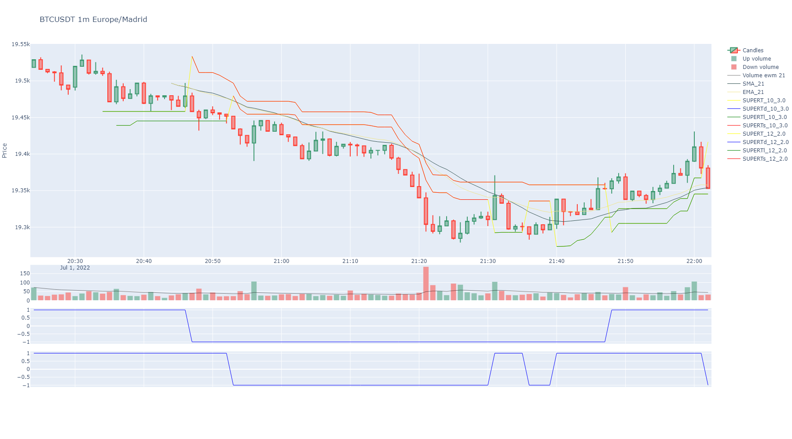
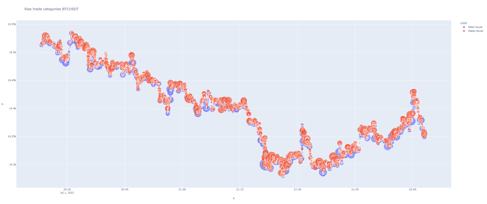
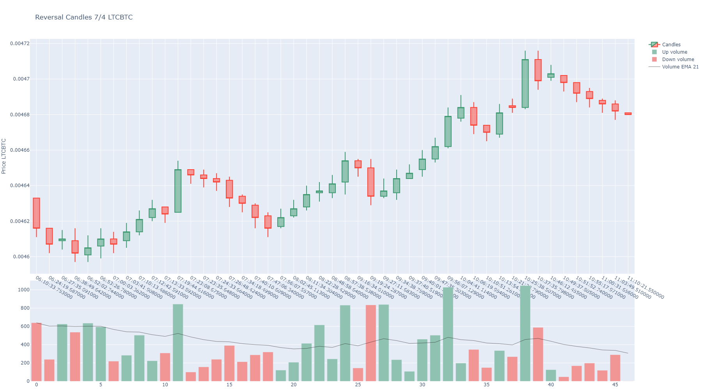
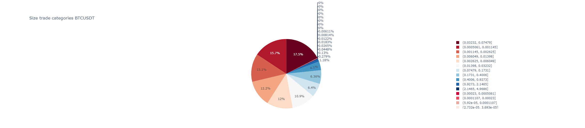
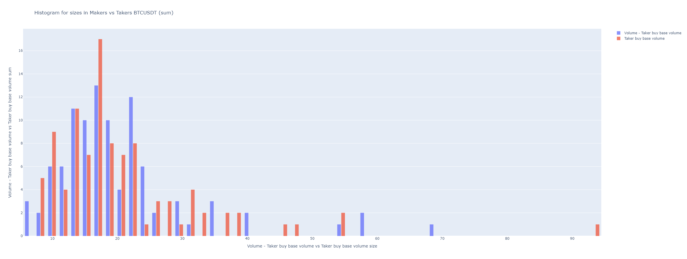
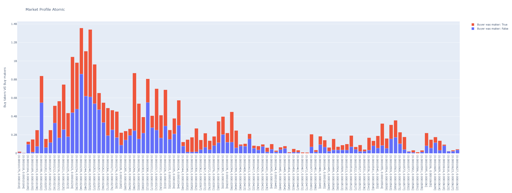
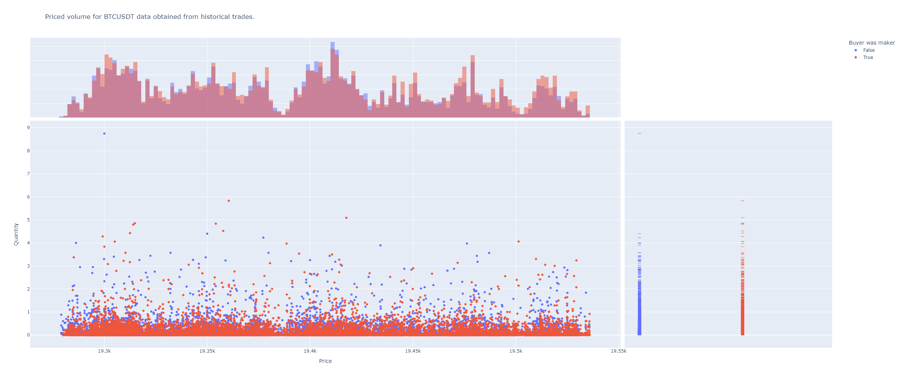
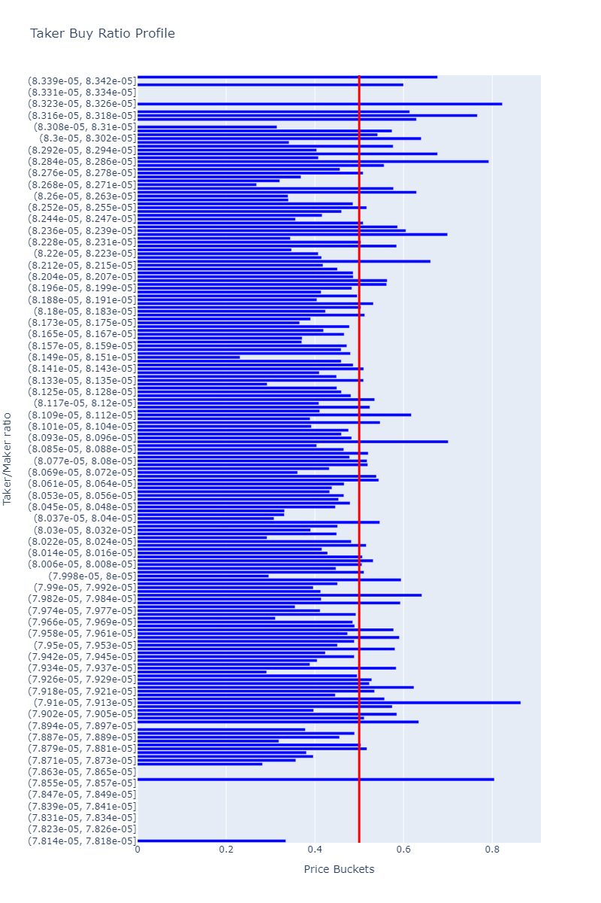

Symbol Plotting¶
Plotting methods mixed into the Symbol class: candlestick charts, trade visualizations,
order book plots, market profile, and more.
Plotting methods for Symbol class.
Classes:
Plotting methods for Symbol. |
- class SymbolPlotting[source]¶
Bases:
objectPlotting methods for Symbol.
Methods:
set_plot_row([indicator_column, row_position])Internal control formatting plots.
set_plot_color([indicator_column, color])Internal control formatting plots.
set_plot_color_fill([indicator_column, ...])Internal control formatting plots.
set_plot_filled_mode([indicator_column, ...])Internal control formatting plots.
set_plot_axis_group([indicator_column, ...])Internal control formatting plots.
Modify the control for splitted series in plots with colored area in two colors by relative position.
remove_plot_info_associated_columns(columns, ...)Completely remove plot info for a column in main dataframe of klines.
remove_plot_info_for_column(column)Remove plot info for a column in main dataframe of klines.
plot([width, height, ...])Plots a candles figure for the object.
plot_agg_trades_size([max_size, height, ...])It plots a time series graph plotting aggregated trades sized by quantity and color if taker or maker buyer.
plot_atomic_trades_size([max_size, height, ...])It plots a time series graph plotting atomic trades sized by quantity and color if taker or maker buyer.
plot_reversal([min_height, min_reversal, ...])Plots reversal candles.
set_plotting_volume_ma([window])Set a window for plotting volume moving average on the candles plot when volumen bars are plotted.
plot_trades_pie([categories, logarithmic, title])Plots a pie chart.
plot_aggression_sizes([bins, hist_funct, ...])Binance fees can be cheaper for maker orders, many times when big traders, like whales, are operating .
plot_market_profile([bins, hours, minutes, ...])Plots volume histogram by prices segregated aggressive buyers from sellers.
plot_volume_profile([bins, value_area_pct, ...])Volume Profile (VPVR): velas + histograma horizontal de volumen, con POC y Value Area.
plot_trades_scatter([x, y, dot_symbol, ...])A scatter plot showing each price level volume or trades.
plot_orderbook([accumulated, title, height, ...])Plots orderbook depth.
plot_orderbook_density([x_col, color, bins, ...])Plot a distribution plot for a dataframe column.
plot_taker_maker_ratio_profile([bins, ...])Plots taker vs maker ratio profile.
- set_plot_row(indicator_column: str = None, row_position: int = None) dict[source]¶
Internal control formatting plots. Can be used to change plot subplot row of an indicator.
- Parameters:
indicator_column (str) – column name
row_position – reassign row_position to column name
- Return dict:
columns with its assigned row_position in subplots when charts.
- set_plot_color(indicator_column: str = None, color: int | str = None) dict[source]¶
Internal control formatting plots. Can be used to change plot color of an indicator.
- Parameters:
indicator_column (str) – column name
color – reassign color to column name
- Return dict:
columns with its assigned colors when charts.
- set_plot_color_fill(indicator_column: str = None, color_fill: str | bool = None) dict[source]¶
Internal control formatting plots. Can be used to change plot color of an indicator.
- Parameters:
indicator_column (str) – column name
color_fill – Color can be forced to fill to zero line. For transparent colors use rgba string code to define color. Example for transparent green ‘rgba(26,150,65,0.5)’ or transparent red ‘rgba(204,0,0,0.5)’
- Return dict:
columns with its assigned colors when charts.
- set_plot_filled_mode(indicator_column: str = None, fill_mode: str = None) dict[source]¶
Internal control formatting plots. Can be used to change plot filling mode for pairs of indicators when.
- Parameters:
indicator_column (str) – column name
fill_mode – Fill mode for indicator. Color can be forced to fill to zero line with “tozeroy” or between two indicators in same axis group with “tonexty”.
- Return dict:
columns with its assigned fill mode.
- set_plot_axis_group(indicator_column: str = None, my_axis_group: str = None) dict[source]¶
Internal control formatting plots. Can be used to change plot filling mode for pairs of indicators when.
- Parameters:
indicator_column (str) – column name
my_axis_group – Fill mode for indicator. Color can be forced to fill to zero line with “tozeroy” or between two indicators in same axis group with “tonexty”.
- Return dict:
columns with its assigned fill mode.
- set_plot_splitted_serie_couple(indicator_column_up: str = None, indicator_column_down: str = None, splitted_dfs: list = None, color_up: str = 'rgba(35, 152, 33, 0.5)', color_down: str = 'rgba(245, 63, 39, 0.5)') dict[source]¶
Modify the control for splitted series in plots with colored area in two colors by relative position.
If no params passed, then returns dict actual contents.
- Parameters:
indicator_column_up (str) – An existing column from a BinPan Symbol’s class dataframe to plot as up serie (green color).
indicator_column_down (str) – An existing column from a BinPan Symbol’s class dataframe to plot as down serie (red clor).
splitted_dfs (tuple) – A list of pairs of a splitted dataframe by two columns.
color_up – An rgba formatted color: https://rgbacolorpicker.com/
color_down – An rgba formatted color: https://rgbacolorpicker.com/
- Return dict:
A dictionary with auxiliar data about plot areas with two colours by relative position.
- remove_plot_info_associated_columns(columns: list, row_level: str) list[source]¶
Completely remove plot info for a column in main dataframe of klines.
- remove_plot_info_for_column(column: str) None[source]¶
Remove plot info for a column in main dataframe of klines. :param column:
- plot(width: int = 1800, height: int = 1000, candles_ta_height_ratio: float = 0.75, volume: bool = True, title: str = None, yaxis_title: str = 'Price', overlapped_indicators: list = None, priced_actions_col: str = 'Close', actions_col: str = None, marker_labels: dict = None, markers: list = None, marker_colors: list = None, priced_markers: list = None, background_color=None, zoom_start_idx=None, zoom_end_idx=None, support_lines: list = None, support_lines_color: str = 'darkblue', resistance_lines: list = None, resistance_lines_color: str = 'darkred', date: str = None, date_radio: int = 20, show: bool = True, image_path: str = None) str | None[source]¶
Plots a candles figure for the object.
Also plots any other technical indicator grabbed.

- Parameters:
width (int) – Width of the plot.
height (int) – Height of the plot.
candles_ta_height_ratio (float) – Proportion between candles and the other indicators. Not considering overlap ones in the candles plot.
volume (bool) – Plots volume.
title (str) – A tittle for the plot.
yaxis_title (str) – A title for the y axis.
overlapped_indicators (list) – Can declare as overlap in the candles plot some column.
priced_actions_col (str) – Priced actions to plot annotations over the candles, like buy, sell, etc. Under developing.
actions_col (str) – A column containing actions like buy or sell. Under developing.
marker_labels (dict) – Names for the annotations instead of the price. For ‘buy’ tags and ‘sell’ tags. Default is {‘buy’: 1, ‘sell’: -1}
markers (list) – Plotly marker type. Usually, if referenced by number will be a not filled mark and using string name will be a color filled one. Check plotly info: https://plotly.com/python/marker-style/
marker_colors (list) – Colors of the annotations.
priced_markers (list) – Explicit operation markers to overlay on exact points: a list of dicts
{'time', 'price', 'side', 'label'?}.side‘buy’ draws a green ▲ (label below), otherwise a red ▼ (label above).timeis a positional candle index (int) or a timestamp (snapped to the nearest candle);priceis the exact y level. Compatible with support/resistance lines and action columns (they overlay together).background_color (str) – Sets background color. Select a valid plotly color name.
zoom_start_idx (int) – It can zoom to an index interval.
zoom_end_idx (int) – It can zoom to an index interval.
support_lines (list) – A list of prices to plot horizontal lines in the candles plot for supports or any other level.
support_lines_color (str) – A color for horizontal lines, ‘darkblue’ is by default.
resistance_lines (list) – A list of prices to plot horizontal lines in the candles plot for resistances or any other level.
resistance_lines_color (str) – A color for horizontal lines, ‘darkred’ is by default.
date (str) – A date in string format to plot a zoom of a radio of klines up and down in time. Useful to inspect dates. Incompatible with zoom_start_idx and zoom_end_idx. Strings formatted as “2022-05-11 06:45:42”
date_radio (str) – A radio in klines to plot a zoom around a date.
- plot_agg_trades_size(max_size: int = 60, height: int = 1000, logarithmic: bool = False, overlap_prices: bool = True, group_big_data: int = None, shifted: int = 1, title: str = None, size_column: str = 'Quantity', width: int = None, horizontal_lines: list = None, show: bool = True, image_path: str = None) str | None[source]¶
It plots a time series graph plotting aggregated trades sized by quantity and color if taker or maker buyer.

- Parameters:
max_size (int) – Max size for the markers. Default is 60. Useful to show whales operating.
height (int) – Default is 1000.
logarithmic (bool) – If logarithmic, then “y” axis scale is shown in logarithmic scale.
group_big_data (int) – Deprecated, ignored. Kept for backward compatibility.
shifted (bool) – If True, shifts prices to plot klines one step to the right, that’s more natural to see trades action in price.
overlap_prices (bool) – If True, plots overlap line with High and Low prices.
title – Graph title.
- plot_atomic_trades_size(max_size: int = 60, height: int = 1000, logarithmic: bool = False, overlap_prices: bool = True, group_big_data: int = None, shifted: int = 1, title: str = None, size_column: str = 'Quantity', width: int = None, horizontal_lines: list = None, show: bool = True, image_path: str = None) str | None[source]¶
It plots a time series graph plotting atomic trades sized by quantity and color if taker or maker buyer.
- Parameters:
max_size (int) – Max size for the markers. Default is 60. Useful to show whales operating.
height (int) – Default is 1000.
logarithmic (bool) – If logarithmic, then “y” axis scale is shown in logarithmic scale.
group_big_data (int) – Deprecated, ignored. Kept for backward compatibility.
shifted (bool) – If True, shifts prices to plot klines one step to the right, that’s more natural to see trades action in price.
overlap_prices (bool) – If True, plots overlap line with High and Low prices.
title – Graph title.

- plot_reversal(min_height: int = None, min_reversal: int = None, text_index: bool = True, from_atomic: bool = False, **kwargs) str | None[source]¶
Plots reversal candles. It requires aggregated or atomic trades fetched previously.
BinPan manages aggregated trades from binance API.
- Parameters:
- Returns:
Example:
import binpan ltc = binpan.Symbol(symbol='ltcbtc', tick_interval='5m', time_zone = 'Europe/Madrid', time_index = True, closed = True, hours=5) ltc.get_trades() ltc.get_reversal_candles() ltc.plot_reversal()

- set_plotting_volume_ma(window: int = 21) None[source]¶
Set a window for plotting volume moving average on the candles plot when volumen bars are plotted.
- Parameters:
window (int) – A window for the moving average.
- plot_trades_pie(categories: int = 25, logarithmic=True, title: str = None) str | None[source]¶
Plots a pie chart. Useful profiling size of trades. Size can be distributed in a logarithmic scale.

- Parameters:
categories – How many groups of sizes.
logarithmic – Logarithmic scale to show more small sizes.
title – A title for the plot.
- plot_aggression_sizes(bins=50, hist_funct='sum', height=900, from_trades=False, title: str = None, total_volume_column: str = None, partial_vol_column: str = None, **kwargs_update_layout) str | None[source]¶
Binance fees can be cheaper for maker orders, many times when big traders, like whales, are operating . Showing what are doing makers.
It shows which kind of volume or trades came from, aggressive_sellers or aggressive_byers.
Can be useful finding support and resistance zones.

- Parameters:
bins – How many bars.
hist_funct – The way graph data is showed. It can be ‘mean’, ‘sum’, ‘percent’, ‘probability’, ‘density’, or ‘probability density’
height – Height of the graph.
from_trades – Requieres grabbing trades before.
title – A title.
total_volume_column – The column with the total volume. It defaults automatically.
partial_vol_column – The column with the partial volume. It defaults automatically. API shows maker or taker separated volumes.
kwargs_update_layout – Optional
- plot_market_profile(bins: int = 100, hours: int = None, minutes: int = None, startTime: int | str = None, endTime: int | str = None, height=900, from_agg_trades=False, from_atomic_trades=False, title: str = None, time_zone: str = None, **kwargs_update_layout) str | None[source]¶
Plots volume histogram by prices segregated aggressive buyers from sellers.
- Parameters:
bins (int) – How many bars.
hours (int) – If passed, it use just last passed hours for the plot.
minutes (int) – If passed, it use just last passed minutes for the plot.
startTime (int | str) – If passed, it use just from the timestamp or date in format (%Y-%m-%d %H:%M:%S: 2022-05-11 06:45:42)) for the plot.
endTime (int | str) – If passed, it use just until the timestamp or date in format (%Y-%m-%d %H:%M:%S: 2022-05-11 06:45:42)) for the plot.
height – Height of the graph.
from_agg_trades – Requieres grabbing aggregated trades before.
from_atomic_trades – Requieres grabbing atomic trades before.
title – A title.
time_zone (str) – A time zone for time index conversion. Example: “Europe/Madrid”
kwargs_update_layout – Optional

- plot_volume_profile(bins: int = 50, value_area_pct: float = 0.7, from_agg_trades: bool = False, from_atomic_trades: bool = False, hours: int = None, minutes: int = None, startTime: int | str = None, endTime: int | str = None, time_zone: str = None, title: str = None, height: int = 900, width: int = None, horizontal_lines: list = None, priced_markers: list = None, show: bool = True, image_path: str = None) str | None[source]¶
Volume Profile (VPVR): velas + histograma horizontal de volumen, con POC y Value Area.
Dibuja las velas a la izquierda y, compartiendo el eje de precio, un histograma horizontal del volumen por nivel a la derecha. Resalta la Value Area, traza el POC y marca los LVN (huecos por donde el precio viaja rapido). Util para ver imanes y soportes/resistencias por aceptacion. Los numeros (POC/VAH/VAL/HVN/LVN) se obtienen con
volume_profile().- Parameters:
bins (int) – numero de niveles del histograma. Default 50.
value_area_pct (float) – fraccion del volumen dentro de la Value Area. Default 0.70.
from_agg_trades (bool) – perfil fino desde aggregated trades (requiere
get_agg_trades()antes).from_atomic_trades (bool) – perfil desde atomic trades (requiere
get_atomic_trades()antes).hours (int) – si se pasa, solo las ultimas ‘hours’ horas.
minutes (int) – si se pasa, solo los ultimos ‘minutes’ minutos.
startTime – timestamp/fecha de inicio (rango fijo).
endTime – timestamp/fecha de fin (rango fijo).
time_zone (str) – zona horaria para el indice temporal.
title (str) – titulo del grafico.
height (int) – alto px. Default 900.
width (int) – ancho px. Si None, autosize.
horizontal_lines (list) – precios extra (entrada/stop/TP) como lineas discontinuas.
priced_markers (list) – marcadores de operacion (▲ compra / ▼ venta) en puntos exactos sobre las velas: lista de
{'time', 'price', 'side', 'label'?}(verset_price_markers).show (bool) – si True (default) abre la figura interactiva; False para uso headless/servidor.
image_path (str) – ruta del PNG de salida. Por defecto
last_plot.pngen el cwd.
- Returns:
ruta absoluta de la imagen exportada, o None si falla.

- plot_trades_scatter(x: str = None, y: str = None, dot_symbol='Buyer was maker', color: str = None, marginal=True, from_trades=True, height=1000, color_referenced_to_y=True, **kwargs) str | None[source]¶
A scatter plot showing each price level volume or trades.
It can be useful finding support and resistance zones.

- Parameters:
dot_symbol – Column with discrete values to assign different symbols for the plot marks.
x – Name of the column with prices. From trades or candles.
y – Name of the column with sizes. From trades or candles.
color – Column with values to use in color scale.
marginal – Show or not lateral plots.
from_trades – Uses trades instead of candles. Useful to avoid grabbing very long time intervals. Result should be similar.
height – Height of the plot.
color_referenced_to_y – Scales color in y axis.
kwargs – Optional plotly args.
- plot_orderbook(accumulated=True, title='Depth orderbook plot', height=800, plot_y='Quantity', **kwargs) str | None[source]¶
Plots orderbook depth.

- plot_orderbook_density(x_col='Price', color='Side', bins=300, histnorm: str = 'density', height: int = 800, title: str = None, **update_layout_kwargs) str | None[source]¶
Plot a distribution plot for a dataframe column. Plots line for kernel distribution.
- Parameters:
x_col (str) – Column name for x-axis data.
color (str) – Column name with tags or any values for using as color scale.
bins (int) – Columns in histogram.
histnorm (str) – One of ‘percent’, ‘probability’, ‘density’, or ‘probability density’ from plotly express documentation. https://plotly.github.io/plotly.py-docs/generated/plotly.express.histogram.html
height (int) – Plot sizing.
title (str) – A title string

- plot_taker_maker_ratio_profile(bins: int = 100, hours: int = None, minutes: int = None, startTime: int | str = None, endTime: int | str = None, from_agg_trades=False, from_atomic_trades=False, time_zone: str = None, title: str = 'Taker Buy Ratio Profile', height=1200, width=800, **kwargs_update_layout) str[source]¶
Plots taker vs maker ratio profile.
- Parameters:
bins (int) – How many bars.
hours (int) – If passed, it use just last passed hours for the plot.
minutes (int) – If passed, it use just last passed minutes for the plot.
startTime (int | str) – If passed, it use just from the timestamp or date in format (%Y-%m-%d %H:%M:%S: 2022-05-11 06:45:42)) for the plot.
endTime (int | str) – If passed, it use just until the timestamp or date in format (%Y-%m-%d %H:%M:%S: 2022-05-11 06:45:42)) for the plot.
height – Height of the graph.
width – Width of the graph.
from_agg_trades – Requieres grabbing aggregated trades before.
from_atomic_trades – Requieres grabbing atomic trades before.
title – A title.
time_zone (str) – A time zone for time index conversion. Example: “Europe/Madrid”
kwargs_update_layout – Optional

{kind=link}
{kind=link}
{kind=link}
{kind=link}
{kind=link}
{kind=link}
{kind=link}
{kind=link}